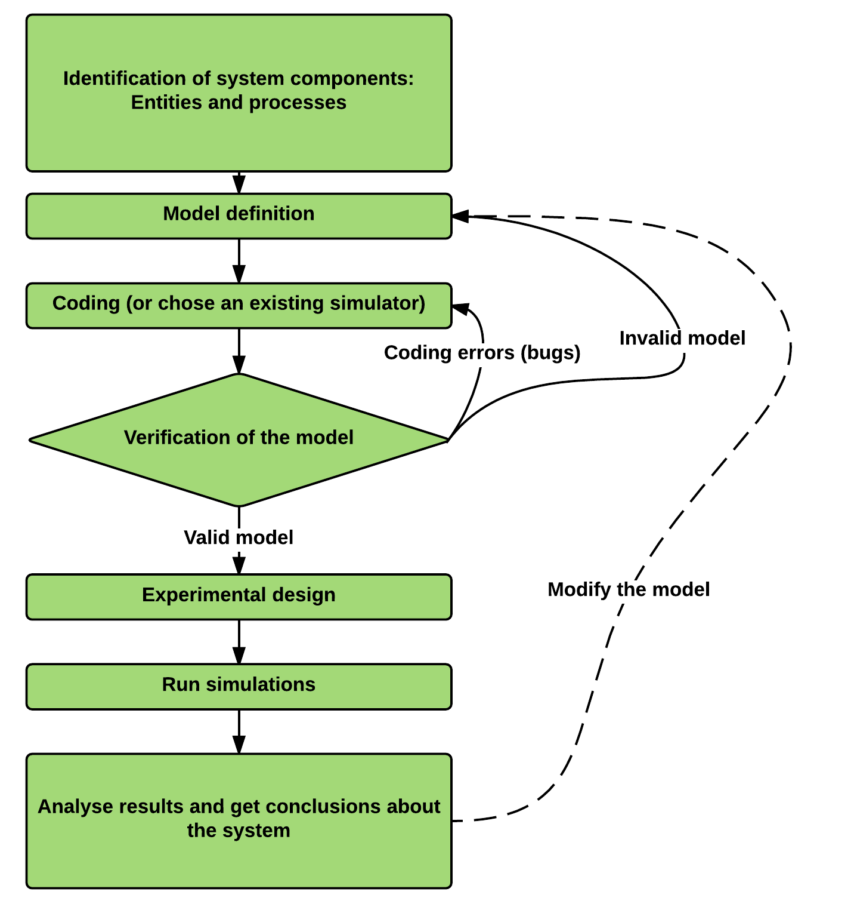
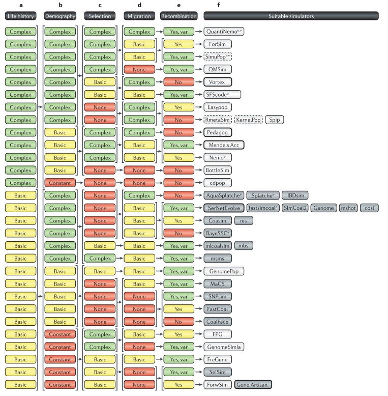
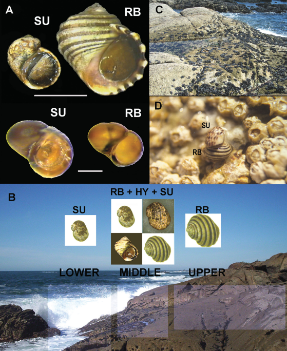
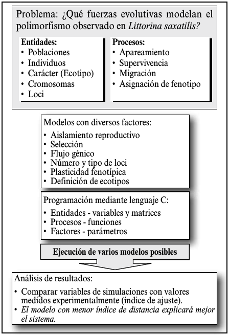
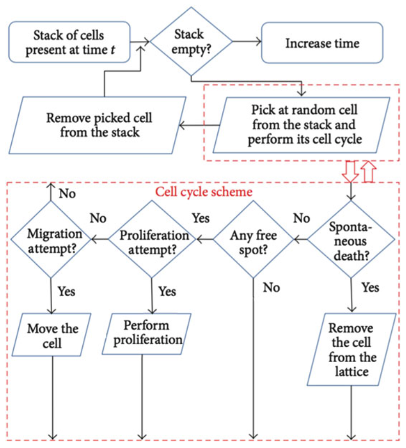
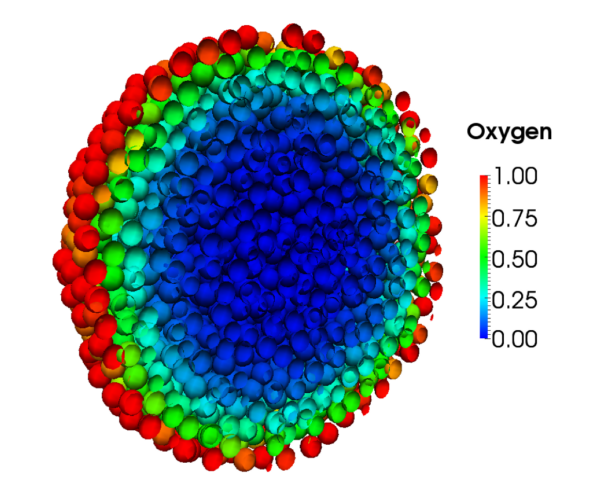
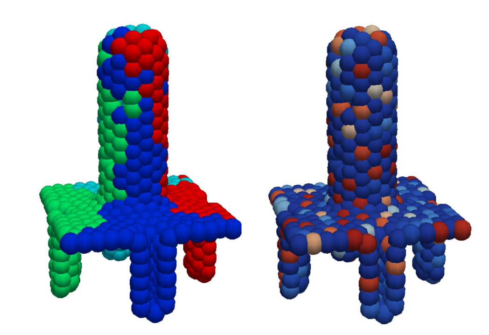
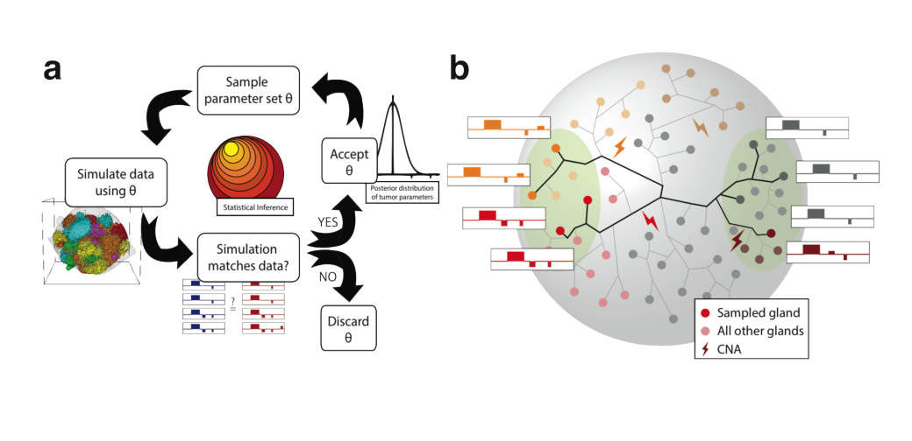

An Overview of Individual-based Simulations in Population Genetics and Cancer
Andrés Pérez-Figueroa (@anpefi)
Lab seminar
22 April 2016
GOALS
- Understand what is a simulation
- Learn how to build an Agent Based Model
- Explore how Agent Based Models had been used in cancer research
What is a (computer) simulation?
- An attempt to mimic a real-world empirical system
- The creation in silico of a possible world using computer programs to represent the processes under consideration
Simulations as experimental systems
- Models could be as complex as the real systems they mimic
- A huge advantage: models are strongly manipulable
- Simulation models are properly explored using the same experimental and statistical techniques that are used to explore real-world systems
genetic data simulation algorithms
- Backward-time (Coalescent)
- Fordward-time
- Resampling
Individual/Agent Based Models (IBMs/ABMs)
- Simulation models describing individual organisms (agents)
- How system level properties emerge from the adaptive behaviour of individuals and how the system affects individuals
- Aspects usually ignored in analytical models: individuals variability, local interactions, life cycles, ...
- More complex in structure than analytical models and then more difficult to analyze, understand and communicate
Structure of an ABM
- A set of agents, their attributes and behaviours.
- A set of agent relationships and methods of interaction:
An underlying topology of connectedness defines how
and with whom agents interact.
- The agents’ environment: Agents interact with their
environment in addition to other agents.
Agents repeatedly and discretly execute their behaviours and interactions.
Building a simulation study

Some Population Genetics simulators

An old example (from my Thesis)

ABMs in cancer research
- Tumor growth
- Phenotypes
- Dynamics of mutation accumulation
- Mostly deterministic laws (PDE)
examples ABM in cancer

examples ABM in cancer
 
Sottoriva 2015 (Big Bang in CRC)
- Agents: Glands (8M -> 80 billion cells)
- Growth by fission (variable rates), occurrence of CNAs and mutations
- All cells in a gland same fitness (survival and growth)
- Parameters: mutation rate and fitness change
- Not modeled: cellular migration, apoptosis within a gland, the contribution of the surrounding normal tissue or angiogenic factors.
Sottoriva 2015 (Big Bang in CRC)
- 400x400x400 lattice
- Starting from a single gland until 80M reached
- Sampling regions
- ABC to fit observed data
Sottoriva 2015 (Big Bang in CRC)

Sottoriva 2015 (Big Bang in CRC)
Our interests
- Final goal is to do a general simulator of intratumoral pop gen.
- Start with a simple model, including selection and genealogy of all the alleles/clones
- Define and separate fitness traits (proliferation speed, growth speed, adhesion)
- Different set of genes/mutations for different traits (pleiotropy?)
Limitations
- Huge computational cost of ABMs
- Limited number of agents or time units
- Reduced genome representation